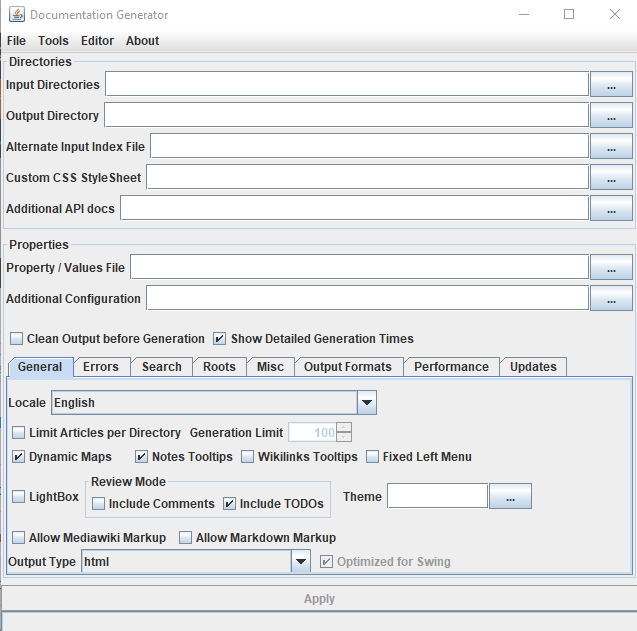

Home
Categories
Dictionary
Download
Project Details
Changes Log
What Links Here
How To
Syntax
FAQ
License
Opening the GUI
Double clicking on the Jar file of the application without specifying any command-line parameter will open the GUI interface of the application.
However, beginning with Java 11, the editor will not be available by default because it relies on JavaFX to show the html content of articles, and JavaFX is not bundled with the JRE installation. However you have other options to open the GUI with the editor functionality.
You need to configure the

However, beginning with Java 11, the editor will not be available by default because it relies on JavaFX to show the html content of articles, and JavaFX is not bundled with the JRE installation. However you have other options to open the GUI with the editor functionality.
Use the launcher
If you double-click on thelauncher.jar jar file in the install directory, you will open the GUI interface and the Editor will be available.You need to configure the
docgenerator.conf file in the same directory. This is a properties file containing two properties:-
JAVAHOME: the path of the JAVA_HOME directory. If you don't specify the path or it is empty, the default JRE location will be used[1]Note that you can also specify a JDK installation -
JAVAFXLIB: the path of the JavaFX library. If the JRE is less than Java 11, this will not be used because before Java 11, JavaFX is bundled with the JRE installation
Example
In this first example, you specify both the JRE installation, and the JavaFX libraries (because the version is Java 17, and it is not the default Java installation, and JavaFX is not bundled with the JRE installation for Java 17):JAVAHOME=L:\WRK\Java\Tools\jre-17.0.2 JAVAFXLIB=L:\WRK\Java\Tools\javafx17\libIn this second example, you don't specify the JRE installation, nor the JavaFX libraries, because we suppose that Java 8 is the default installation for Java
JAVAHOME= JAVAFXLIB=In this last example, you don't specify the JRE installation, because we suppose that Java 17 is the default installation for Java, but we need to specify the JavaFX libraries for JavaFX 17:
JAVAHOME= JAVAFXLIB=L:\WRK\Java\Tools\javafx17\lib
Notes
- ^ Note that you can also specify a JDK installation
See also
- GUI interface: This article is about the GUI interface of the application
- Editor: This article explains the DocGenerator editor
×

Categories: General | Gui